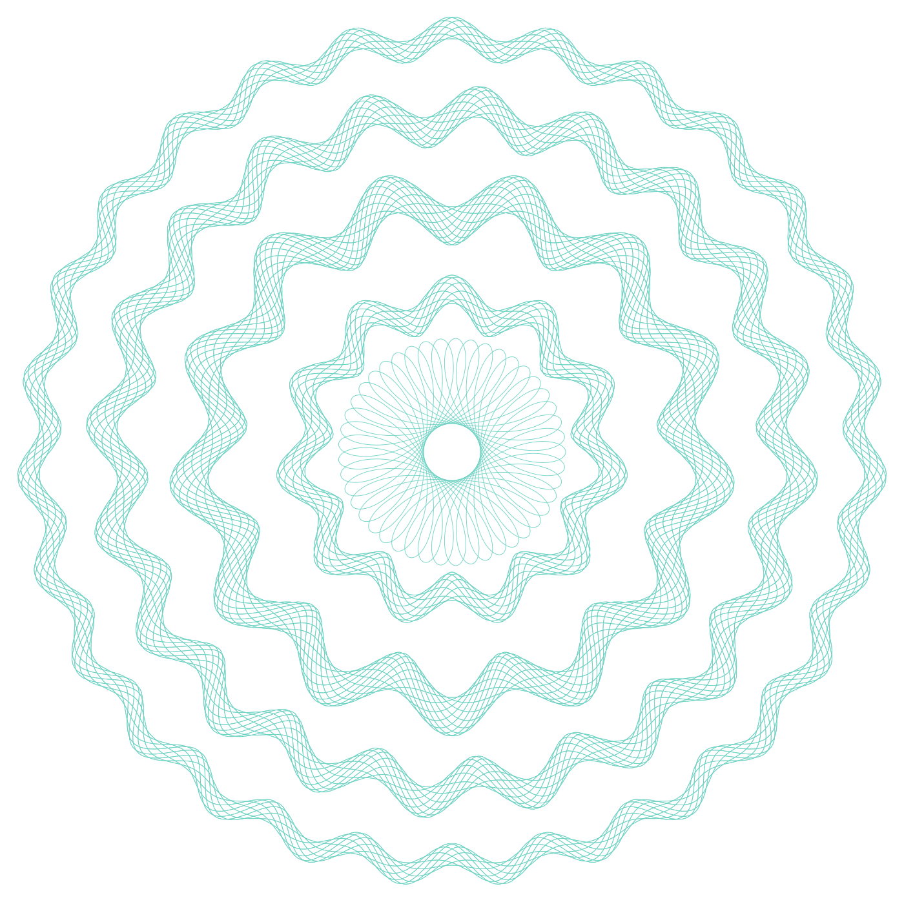
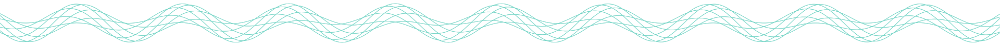
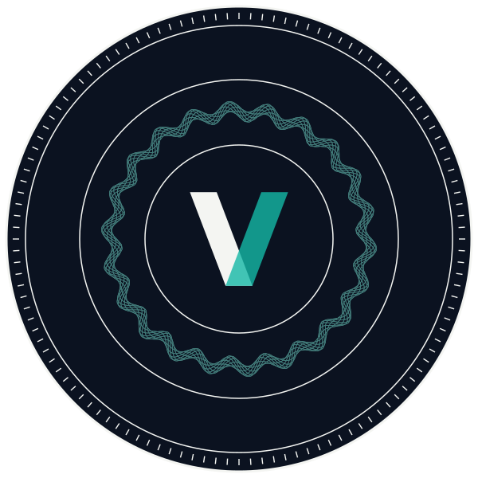

Public record · Consultation draft v0.2

The public record of who Parliament lets into power, and on what evidence.
- Instrument
- Public Appointments Record, Republic of Kenya
- Proposed host
- Civic Tech Tools, Mzalendo Trust (partnership not yet agreed)
- Prepared by
- Agent9 · September 2026
VETTAPublic Appointments RecordConsultation draft v0.2 · Sep 2026
01 · The problem
93 nominations. One rejection.
Kenya's Parliament vets every Cabinet Secretary and Principal Secretary before they take office. Across three vetting cycles the gate said yes 92 times.
Cabinet, 202222 nominated · 22 approved
Principal Secretaries, 202251 nominated · 51 approved
Cabinet reconstitution, 202420 nominated · 1 rejected
Approved by the HouseRejected by the HouseOne square per nomination
VETTAPublic Appointments RecordConsultation draft v0.2 · Sep 2026
02 · What the record shows
A mass dismissal that returned half the cabinet.
On 11 July 2024, during the Finance Bill protests, the President dismissed the cabinet. Four weeks later, Parliament approved its replacement. The pattern appears only when appointment histories are linked per person.
Table 1 · Key figures, three vetting cycles
98.9%Approval rate across three vetting cycles (92 of 93)
10 of 192024 appointees who sat in the cabinet dissolved four weeks earlier
9 of 10Returnees who simply changed docket
231 daysGender docket vacant after the only House rejection
VETTAPublic Appointments RecordConsultation draft v0.2 · Sep 2026
03 · What VETTA does
One durable, citable record for every public appointment.
I
Before · T-30 to hearing
Dossier
Source-linked appointment history for every nominee. A public question queue, ranked by citizens.
II
During · 28-day window
Hearing record
Which questions MPs asked, which they ignored, per topic. Silence becomes visible.
III
After · post-vote
Vote trail
Committee report against citizen submissions. A per-MP record, shareable at the next election.
Output at every stageA dated, source-linked entry in the public ledger, hashed and mirrored so it cannot be quietly withdrawn.
VETTAPublic Appointments RecordConsultation draft v0.2 · Sep 2026
04 · The ledger
Every appointment linked to the person.
- 93 people, 111 appointments, each with its nomination, decision and exit dates.
- Every fact cited to dated reporting or the official record.
- Cross-checked across independent sources before it ships.
Exhibit A · Appointment record Working prototype
VETTAPublic Appointments RecordConsultation draft v0.2 · Sep 2026
05 · Pattern signals
Computed, not asserted.
- 8 deterministic rules run over the ledger at build time.
- Each rule is stated in plain language, so anyone can re-derive a match by hand.
- A signal marks a pattern in the process. It is never a finding about a person.
- The ledger has already caught two errors in the project's own working notes.
Exhibit B · Pattern signals Working prototype
VETTAPublic Appointments RecordConsultation draft v0.2 · Sep 2026
06 · Built to stay up
A public record is only useful if it survives pressure.
| No. | Safeguard | Status | What it guarantees |
|---|
| 6.1 | Static site | LIVE | No database to take down. Any host, mirror or USB stick can serve it. |
| 6.2 | Content hashes | LIVE | SHA-256 per record plus a ledger root. Tampering on any mirror is detectable. |
| 6.3 | Open data export | LIVE | Ledger, manifest and events published for independent archiving. |
| 6.4 | Signed Nostr events | READY | Each record is a replaceable, signed event. Blocking one domain does not remove it. |
| 6.5 | Secure tip line | PLANNED | Sealed messages to reviewers, reachable even if the domain is blocked. |
VETTAPublic Appointments RecordConsultation draft v0.2 · Sep 2026
07 · Editorial safeguards
A record with no signals is not an endorsement. A record with signals is not an accusation.
Art. 1No bare allegations
Every flag cites a source document, and rejection grounds are recorded verbatim.
Art. 2Process, not persons
Signals describe how an appointment moved through the gate.
Art. 3Corrections are first-class
A secure reporting channel, and corrections replace the old record everywhere it is mirrored.
Art. 4Experimental scoring stays gated
The Integrity Index runs on synthetic data, stamped MOCK and pseudonymised for any public deployment.
VETTAPublic Appointments RecordConsultation draft v0.2 · Sep 2026
08 · Where it stands
Working prototype today. Election-ready by 2027.
| Phase | Workstream | Status | Scope |
|---|
| I | Ledger and signals | BUILT | 93 records sealed, 8 signal rules, overview, vetting gate, scoring sandbox |
| II | Resilience layer | BUILT | Static build, content hashes, open data, Nostr export |
| III | Hardening · Oct to Nov 2026 | NEXT | Gazette watcher, Hansard parser, citizen questions, CSO submission portal |
| IV | Scale · 2027 | NEXT | Kiswahili interface, SMS alerts, per-MP scorecards ahead of the August 2027 election |
| V | Partnership | OPEN | Hosting and editorial ownership with Mzalendo, not yet agreed |

09 · The ask
Put the vetting gate on the record before the 2027 election.
- Host VETTA under Mzalendo's Civic Tech Tools.
- Own the editorial review, with corrections handled in the open.
- Put every appointment in the next Parliament on a public, verifiable record.
Terry RichardsFounder, Agent9 · agent9.dev